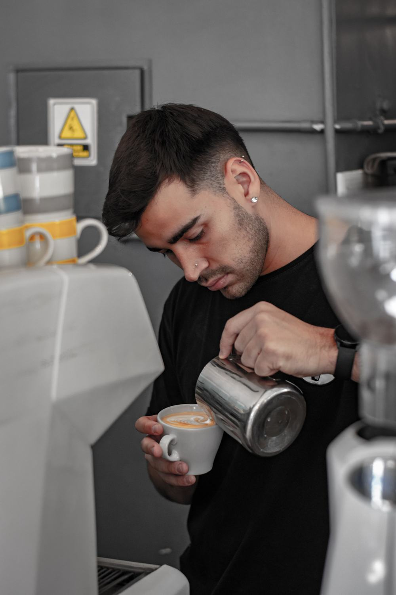

Our story
A village cafe, run by the village.
We opened The Willow Tree because we wanted somewhere to sit with a good coffee without driving into town. Ten years on, it’s where the walking group warms up, where toddlers have their first babyccino, and where half the parish council seems to hold its meetings.
Our bread comes from a baker in the next village, our eggs from a farm you can see from the car park, and the cakes are made by us, at 6am, every day.
“Best scones for miles, and they brought a water bowl out for our spaniel before we’d even sat down.”Helen, Google review